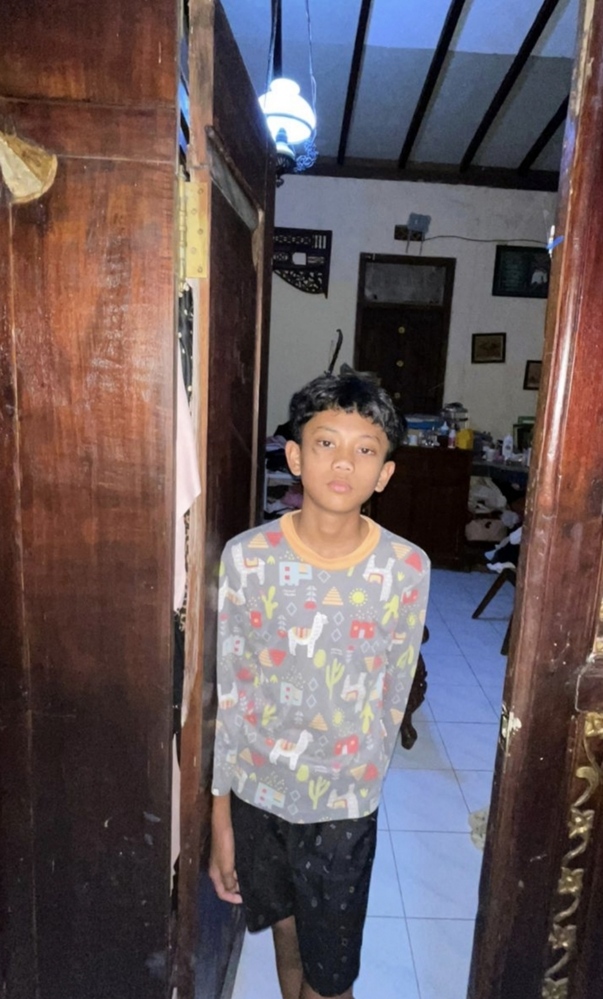

Operator: R.ng.khrishna mirza p
Codename: Eza
Age: 13 Years Old
Status: Constructing the Ultimate Cyber Shield Mindset

Di balik gemerlapnya internet, ada dunia bawah tanah yang penuh lalu lintas data rahasia dan ancaman siber. Banyak remaja seusia saya hanya menjadi pengguna biasa, tetapi saya—R.ng.khrishna mirza p (Eza)—memilih jalan berbeda di usia 13 tahun ini untuk menjadi benteng pertahanan.
Dunia siber tidak peduli seberapa hafal kamu tentang teori sejarah atau rumus kuno sekolah; dunia ini hanya peduli pada satu hal: skil nyata dan logika pemecahan masalah. Saya membuktikan bahwa remaja bisa menguasai teknologi tingkat tinggi secara otodidak.
Mulai dari langkah kecil: pelajari dasar HTML lewat HP, pahami alur data internet (IP Address & Server), serta gunakan bahasa Inggris dasar untuk membaca solusi eror coding.
Top-up game hanya membeli piksel data sementara yang bisa hilang kapan saja. Kemenangan sejati di dalam game didapat dari skil murni, bukan karena membeli item kosmetik.
Logika komputer itu pasti (1 atau 0). Belajarlah membelah masalah besar menjadi bagian terkecil, buat urutan langkah yang runtut, dan gunakan analisis sebab-akibat (Jika-Maka).
Setelah menguasai HTML untuk struktur web, langkah selanjutnya adalah mengenal bahasa pemrograman sesungguhnya seperti Python atau JavaScript untuk mengontrol logika-logika yang lebih rumit.
Hacker profesional tidak memakai sistem operasi biasa. Mereka menggunakan Linux (seperti Kali Linux) karena memberikan kendali penuh atas jaringan dan keamanan komputer.
Kriptografi adalah ilmu menyandikan data. Melalui enkripsi, pesan rahasia diubah menjadi kode acak agar tidak bisa diintip oleh penjahat siber di tengah jalan.
Phishing adalah taktik penipuan di mana hacker jahat membuat link palsu (seperti web bank palsu) untuk mencuri password. Kita harus jeli memeriksa alamat URL sebelum login.
Jangan pernah memakai password lemah seperti tanggal lahir. Gunakan kombinasi huruf besar, angka, dan simbol, serta aktifkan Two-Factor Authentication (2FA).
Ada dua jalur: Black Hat (merusak) dan White Hat (melindungi). Pilihan saya adalah White Hat, menggunakan ilmu siber untuk menolong instansi dan mengamankan data orang banyak.
Setiap projek web atau kode yang berhasil dibuat harus disimpan rapi. Kumpulan karya ini akan menjadi bukti nyata keahlian kita saat mendaftar kerja di masa depan.
Di dunia IT, eror adalah makanan sehari-hari. Eror bukanlah kegagalan, melainkan petunjuk dari komputer tentang bagian mana yang harus diperbaiki.
Duduk terlalu lama di depan layar bisa merusak tubuh. Jaga kesehatan mata, istirahat yang cukup, dan tetap berolahraga agar otak tetap tajam saat menganalisis kode.
Seseorang yang benar-benar hebat tidak akan pamer di media sosial atau meretas wifi sekolah demi pujian. Hacker sejati bergerak dalam diam, fokus pada pengembangan diri, dan selalu menghormati proses belajar.